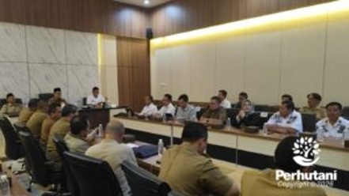

TASIKMALAYA, PERHUTANI (06/01/2026) | Perum Perhutani Kesatuan Pemangkuan Hutan (KPH) Tasikmalaya menghadiri rapat tindak lanjut kerja sama pemanfaatan jasa lingkungan kawasan wisata alam yang diselenggarakan oleh Pemerintah Kabupaten Tasikmalaya pada Senin, 5 Januari 2026. Kegiatan tersebut berlangsung di Pendopo Baru Kabupaten Tasikmalaya, Kompleks Perkantoran Jalan Raya Sukapura, Singaparna.
Rapat ini merupakan kelanjutan dari kesepakatan bersama antara Pemerintah Kabupaten Tasikmalaya dengan PT Perhutani Alam Wisata (Palawi) Risorsis dan Perum Perhutani KPH Tasikmalaya dalam rangka optimalisasi pemanfaatan jasa lingkungan pada kawasan wisata alam di wilayah Kabupaten Tasikmalaya.
Hadir dalam kegiatan tersebut Wakil Administratur/KSKPH Tasikmalaya, Rodiana Rahman beserta jajaran, Direktur Utama PT Perhutani Alam Wisata Risorsis Tedy Sumarto beserta jajaran, Bupati Tasikmalaya H. Cecep Nurul Yakin, beserta jajaran, serta unsur terkait lainnya sebagai bentuk penguatan sinergi lintas pemangku kepentingan.
Agenda rapat difokuskan pada pembahasan persiapan Perjanjian Kerja Sama sebagai landasan hukum pelaksanaan kerja sama pemanfaatan jasa lingkungan, sekaligus penyamaan persepsi mengenai ruang lingkup, mekanisme, dan arah kebijakan pengelolaan kawasan wisata alam.
Wakil Administratur /KSKPH Tasikmalaya, Rodiana Rahman menyampaikan bahwa Perum Perhutani mendukung penuh penguatan kerja sama lintas sektor dalam pengelolaan jasa lingkungan secara berkelanjutan. “Perum Perhutani siap bersinergi dengan Pemerintah Kabupaten Tasikmalaya dan PT Palawi Risorsis untuk memastikan pemanfaatan jasa lingkungan berjalan selaras dengan prinsip kelestarian hutan dan memberikan manfaat nyata bagi masyarakat,” ujarnya.
Sementara itu, Bupati Tasikmalaya H. Cecep Nurul Yakin menegaskan bahwa kerja sama tersebut merupakan langkah strategis dalam mengoptimalkan potensi kawasan wisata alam di Kabupaten Tasikmalaya. “Kerja sama ini tidak hanya berorientasi pada pengembangan wisata, tetapi juga pada peningkatan kesejahteraan masyarakat dan keberlanjutan lingkungan. Pemerintah daerah berkomitmen mendukung pengelolaan jasa lingkungan yang tertib, berkelanjutan, dan berdampak positif bagi daerah,” ungkapnya.
Dalam rapat tersebut juga dibahas skema kerja sama yang diharapkan mampu mendorong optimalisasi potensi wisata alam, peningkatan Pendapatan Asli Daerah (PAD), serta penciptaan dampak ekonomi yang berkelanjutan bagi masyarakat Kabupaten Tasikmalaya.
Melalui rapat tindak lanjut ini, diharapkan Perjanjian Kerja Sama dapat segera difinalisasi dan diimplementasikan secara efektif, sehingga kerja sama antara Pemerintah Kabupaten Tasikmalaya, Perum Perhutani, dan PT Perhutani Alam Wisata Risorsis dapat berjalan selaras dalam mendukung pembangunan daerah dan pengelolaan hutan yang berkelanjutan.
Editor: WK
Copyright © 2026 Warta Nusantara Barat